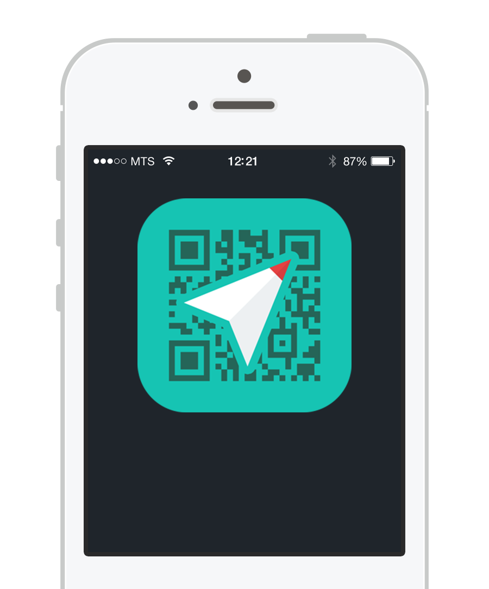

株式会社デンソーの新技術、「MapQR」を利用した新しいナビゲーションアプリです。
MapQRについて詳しくはこちら >
距離と方角だけを表示する方向音痴用のナビアプリWaaaaay!が進化！ついに目的地の入力も必要無くなりました！新時代の方向音痴はQRコード読んで目的地に向かうだけ。
MapQRは、人も機械も読める位置情報の2次元コードです。略地図として人が目で見て理解でき、コードリーダーで正確な位置情報が読み取れます。
例えばこんなものです↓